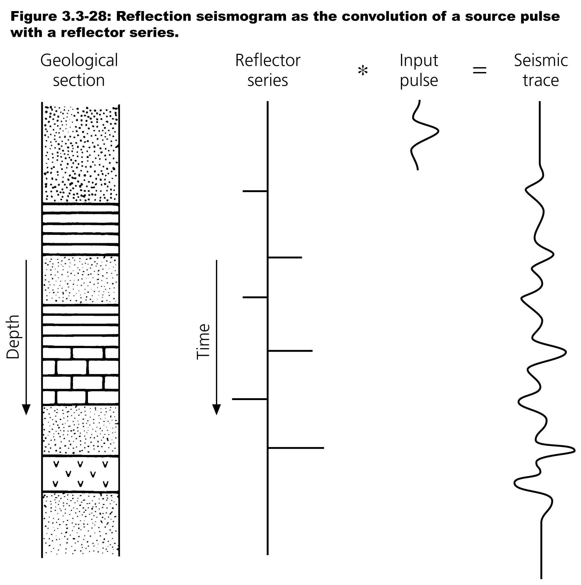
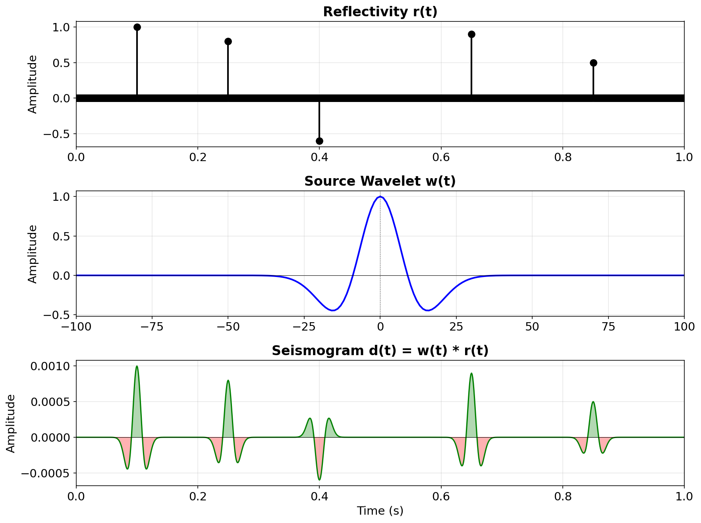
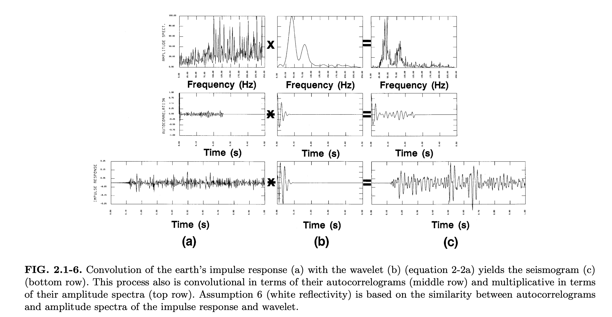
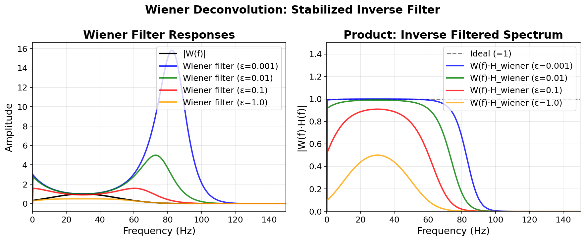
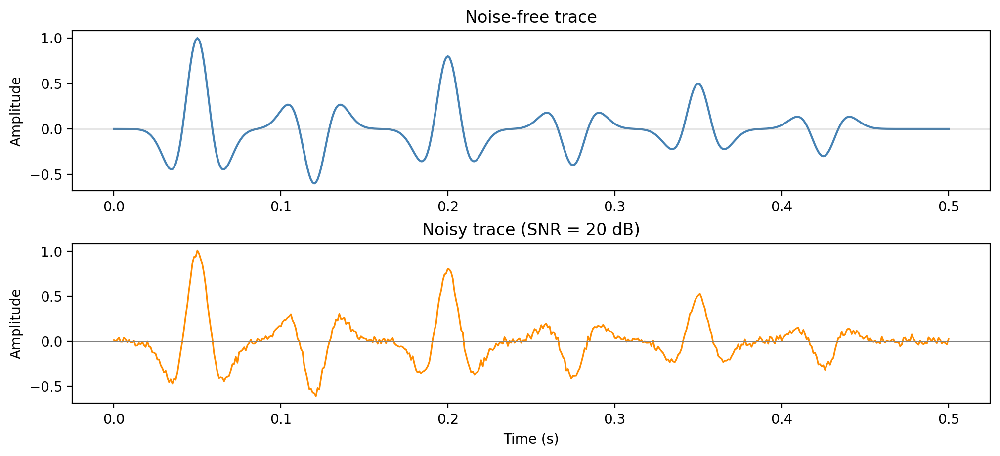
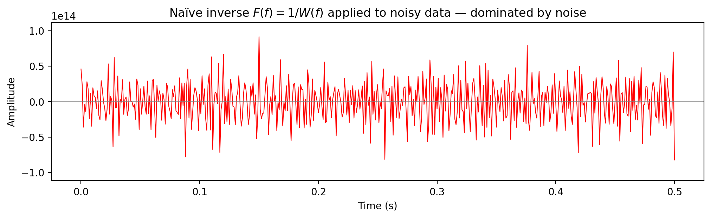
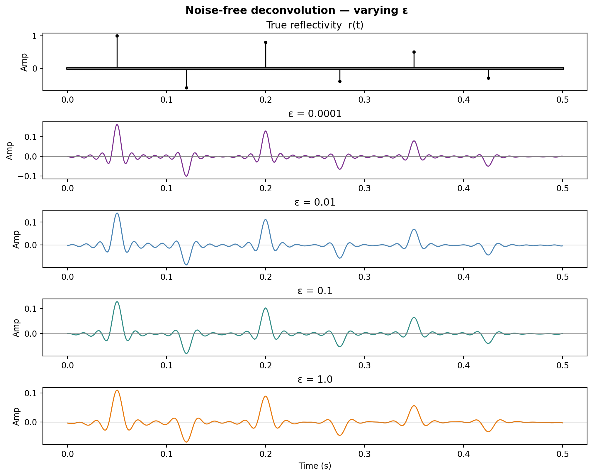
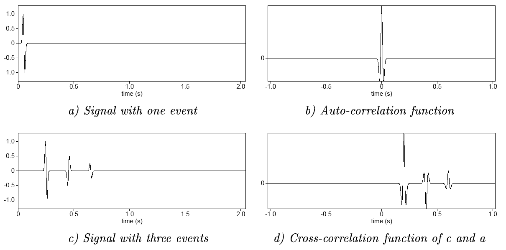
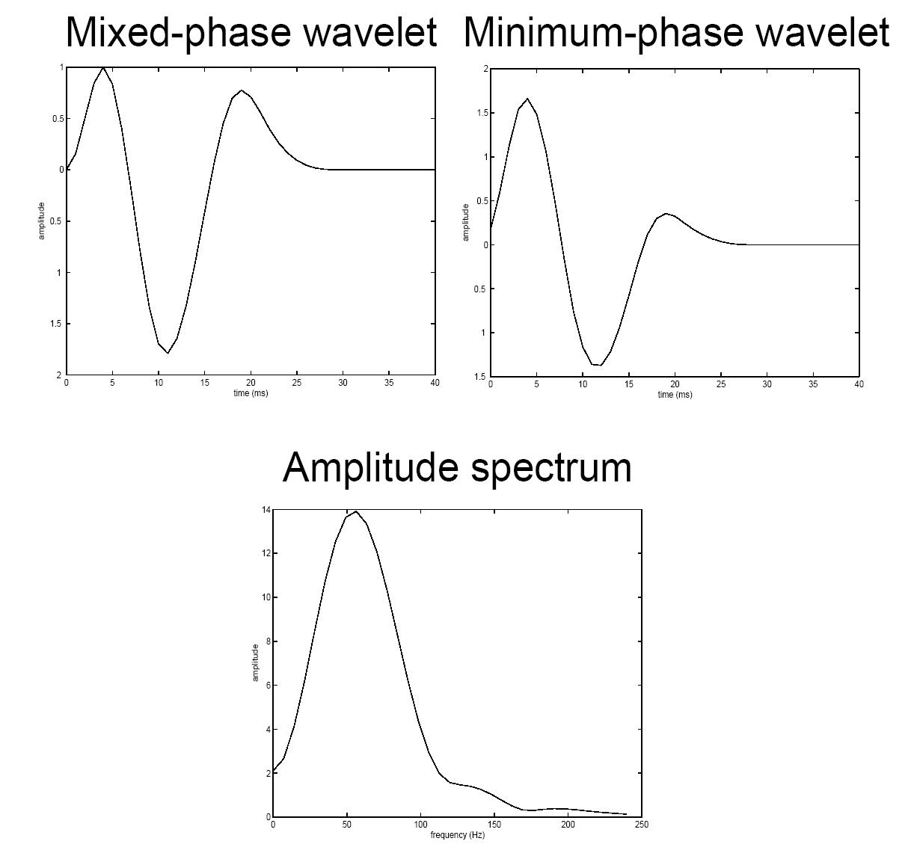
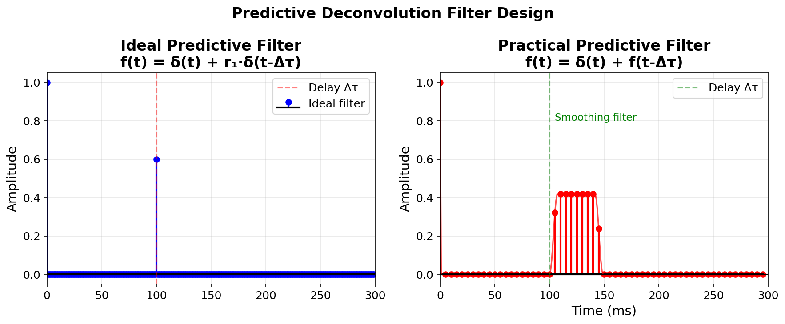

Convolution — continuous
Let \(w(t)\) denote the source wavelet and \(r(t)\) the reflectivity series. Their convolution is
\[
d(t) = (w \ast r)(t) = \int_{-\infty}^{\infty} w(\tau)\, r(t - \tau)\, d\tau
\]
where \(d(t)\) is the recorded seismic trace.
Physical interpretation: the output \(d(t)\) is a weighted superposition of shifted copies of \(r(t)\), with weights given by \(w(\tau)\).
Correlation — as adjoint of convolution
The cross-correlation of \(w(t)\) with \(d(t)\) is
\[
r_{wd}(\tau) = \int_{-\infty}^{\infty} w(t)\, d(t + \tau)\, dt
\]
This is equivalently written as convolution with the time-reversed wavelet:
\[
r_{wd}(\tau) = (w(-\cdot) \ast d)(\tau)
\]
In operator language, correlation is the adjoint (transpose) of convolution: if \(\mathbf{d} = \mathbf{W}\mathbf{r}\), then \(\mathbf{W}^T\mathbf{d}\) computes the cross-correlation between the wavelet and the seismic trace.
The auto-correlation is the special case: \(r_{ww}(\tau) = \int w(t)\, w(t + \tau)\, dt\).
Fourier-domain view
Let \(W(f)\), \(R(f)\), \(D(f)\) denote the Fourier transforms of \(w(t)\), \(r(t)\), \(d(t)\). Then:
Convolution in time becomes multiplication in frequency:
\[
D(f) = W(f)\, R(f)
\]
Cross-correlation becomes
\[
R_{wd}(f) = W^*(f)\, D(f)
\]
Auto-correlation becomes
\[
R_{ww}(f) = |W(f)|^2
\]
where \(W^*(f)\) denotes the complex conjugate of \(W(f)\).
Discrete convolution
For sampled signals \(w[n]\) and \(r[n]\) with sampling interval \(\Delta t\):
\[
d[n] = \sum_{k} w[k]\, r[n - k]
\]
Convolution is a linear operation, which can be written in matrix form:
\[
\mathbf{d} = \mathbf{W}\, \mathbf{r}
\]
where \(\mathbf{W}\) is a Toeplitz matrix built from the wavelet samples. Its adjoint \(\mathbf{W}^T\) computes correlation.
Discrete Fourier-domain equivalence
Let \(\mathbf{F}\) denote the DFT matrix. Then \(\hat{\mathbf{d}} = \mathbf{F}\mathbf{d}\) and the convolution becomes an elementwise (Hadamard) product:
\[
\hat{\mathbf{d}} = \hat{\mathbf{w}} \odot \hat{\mathbf{r}} = \operatorname{diag}(\hat{\mathbf{w}})\, \hat{\mathbf{r}}
\]
where \(\hat{\mathbf{W}} = \mathbf{F}\mathbf{w}\), \(\hat{\mathbf{R}} = \mathbf{F}\mathbf{r}\), and \(\odot\) is the Hadamard (elementwise) product.
This means convolution is diagonalized by the DFT — each frequency is independent.
Seismic convolutional model
The 1-D seismic trace is modeled as
\[
d(t) = w(t) \ast r(t) + n(t)
\]
where:
- \(w(t)\) — source wavelet, the band-limited pulse emitted by the seismic source
- \(r(t)\) — reflectivity series, a sequence of spikes at impedance boundaries
- \(n(t)\) — additive noise (ambient, instrumental, etc.)
- \(d(t)\) — recorded seismogram
Convolutional model — geological picture
Geological section \(\to\) impedance contrasts \(\to\) reflectivity series \(r(t)\) convolved with source wavelet \(w(t)\) yields the seismic trace \(d(t)\). (Yilmaz 2001)
Example: reflectivity \(\ast\) Ricker wavelet
Each reflector produces a shifted, scaled copy of \(w(t)\); the seismogram \(d(t)\) is their superposition.
Ricker wavelet and its amplitude spectrum

The Ricker wavelet is band-limited — it has zero energy at DC \((f=0)\) and at high frequencies. Peak frequency \(f_0 = 25\) Hz.
Convolution of the Earth impulse response
Convolution of earth’s impulse response (a) with wavelet (b) yields the seismogram (c). This is multiplicative in the amplitude spectra (top) and convolutional in the autocorrelations (middle). (Yilmaz 2001)
Vibroseis: sweep & Klauder wavelet

The vibroseis source emits a long frequency sweep. Cross-correlating the recorded data with the known sweep produces the Klauder wavelet — a compact, zero-phase pulse. (Sheriff and Geldart 1995)
Objective of deconvolution
Remove unwanted effects from the seismic signal to improve temporal resolution:
- Source/receiver characteristics — finite-bandwidth wavelet blurs the reflectivity
- Propagation effects — near-surface reverberations, ghosting
- Shallow water multiples — periodic repetitions from the water bottom
The aim is to recover a broadband, spike-like reflectivity \(r(t)\) from the recorded trace \(d(t)\).
Deconvolution — the “inverse” problem
Goal: find \(r(t)\) from \(d(t) = w(t) \ast r(t) + n(t)\).
In the frequency domain the noise-free inverse is
\[
R(f) = \frac{D(f)}{W(f)}
\]
Equivalently, the inverse filter \(F(f) = 1/W(f)\) satisfies
\[
F(f)\, W(f) = 1 \quad \longleftrightarrow \quad f(t) \ast w(t) = \delta(t)
\]
The division-by-zero problem
Wherever \(W(f) \approx 0\) (spectral notches), the inverse \(1/W(f)\) blows up:
\[
\hat{R}(f) = R(f) + \frac{N(f)}{W(f)} \longrightarrow \infty
\]
Any small noise \(N(f)\) at those frequencies gets amplified enormously.
Deconvolution in the frequency domain

Adapted from Eric Verschuur
- Before deconvolution: signal spectrum dominates over noise.
- After naïve deconvolution: noise dominates at frequencies where \(|W(f)|\) is small.
Types of deconvolution
The term deconvolution is used for many different signal enhancement techniques:
| Spiking |
Sharpen wavelet \(\to\) spike \(\delta(t)\) |
Wavelet is minimum-phase |
| Minimum-phase |
Estimate source/receiver and earth response |
\(w(t)\) is minimum-phase, \(r(t)\) is white |
| Predictive |
Remove source/receiver ghosts and multiples |
Periodic structure in the data |
Main problem: the source/receiver responses and earth response are both unknown. Given \(z = x \ast y\), what are \(x\) and \(y\)? This is a blind deconvolution problem.
Stabilized deconvolution — Wiener filter
Instead of \(1/W(f)\), use the Wiener filter (Wiener 1949):
\[
F(f) = \frac{W^*(f)}{|W(f)|^2 + \varepsilon}
\]
where \(\varepsilon > 0\) is the stabilization (damping) parameter that prevents division by zero.
Two regimes of the Wiener filter
\[
F(f) = \frac{W^*(f)}{|W(f)|^2 + \varepsilon}
\]
- when signal is strong: \(|W(f)|^2 \gg \varepsilon\)
\[F(f) \approx \frac{1}{W(f)} \qquad \Rightarrow \text{inverse filtering}\]
- when signal is weak: \(|W(f)|^2 \ll \varepsilon\)
\[F(f) \approx \frac{W^*(f)}{\varepsilon} \approx 0 \qquad \Rightarrow \text{suppress noisy frequencies}\]
Stabilized noise-free

Adapted from Eric Verschuur
Stabilized noisy

Adapted from Eric Verschuur
Wiener filter for different \(\varepsilon\)
Left: Wiener filter amplitude for \(\varepsilon \in \{0.001, 0.01, 0.1, 1.0\}\). Right: product \(W(f) \cdot F(f)\) — approaches \(1\) for small \(\varepsilon\), increasingly damped for large \(\varepsilon\).
Stabilized deconvolution — results

Top: noise-free. Bottom: noisy (SNR = 20 dB). Small \(\varepsilon\) gives better resolution but amplifies noise — the classic resolution vs stability trade-off.
Setup: wavelet, reflectivity, and data

Ricker wavelet \(w(t)\) with \(f_0 = 25\) Hz convolved with a sparse reflectivity \(r(t)\) containing six isolated reflectors.
Noise-free vs noisy observed traces
Additive Gaussian noise at SNR = 20 dB. The noise is broadband — it contaminates all frequencies, including those where \(|W(f)| \approx 0\).
Naïve inverse: \(F(f) = 1/W(f)\)
Spectral division without stabilization. At spectral nulls of \(W(f)\) the noise is amplified without bound:
\[
\hat{R}(f) = R(f) + \frac{N(f)}{W(f)} \;\longrightarrow\; \infty
\]
The result is useless — completely dominated by amplified noise.
Wiener filter
The stabilized (Wiener) deconvolution filter:
\[
F_\varepsilon(f) = \frac{W^*(f)}{|W(f)|^2 + \varepsilon}
\]
Two regimes:
- \(|W(f)|^2 \gg \varepsilon\): \(\;F_\varepsilon(f) \approx 1/W(f)\) — inverse filtering
- \(|W(f)|^2 \ll \varepsilon\): \(\;F_\varepsilon(f) \approx W^*(f)/\varepsilon \approx 0\) — suppresses noisy frequencies
Noise-free deconvolution — varying \(\varepsilon\)
With no noise, small \(\varepsilon\) gives near-perfect recovery. As \(\varepsilon\) increases, the result becomes over-smoothed.
Noisy deconvolution — varying \(\varepsilon\)

With noise, small \(\varepsilon\) amplifies noise dramatically. Larger \(\varepsilon\) stabilizes the result at the cost of resolution.
Frequency-domain view

Top: wavelet amplitude spectrum \(|W(f)|\). Bottom: effective resolution filter \(W(f) \cdot F_\varepsilon(f)\) — ideally unity across the signal band.
Resolution vs stability — the trade-off

All \(\varepsilon\) values overlaid with true \(r(t)\). Left: noise-free. Right: noisy. The optimal \(\varepsilon\) balances data misfit and noise amplification.
Summary
- Small \(\varepsilon\) — good resolution but amplifies noise
- Large \(\varepsilon\) — stable but over-smoothed (loss of resolution)
- The optimal \(\varepsilon\) balances data misfit and noise amplification
- In practice \(\varepsilon\) is chosen as a fraction of \(\max|W(f)|^2\) or estimated from the noise level—i.e., \(\varepsilon=0.05 \max|W(f)|^2\)
Time-domain: least-squares formulation
In the time domain, deconvolution becomes a least-squares problem. Given data vector \(\mathbf{d}\) and convolution matrix \(\mathbf{W}\):
\[
\min_{\mathbf{r}} \|\mathbf{d} - \mathbf{W}\mathbf{r}\|_2^2
\]
The normal equations that solve this objective give
\[
\mathbf{W}^T \mathbf{W}\, {\mathbf{r}} = \mathbf{W}^T \mathbf{d}
\]
Tikhonov regularization
Adding an \(\ell_2\)-penalty on \(\mathbf{r}\) yields the damped (Tikhonov regularized) problem:
\[
\min_{\mathbf{r}} \|\mathbf{d} - \mathbf{W}\mathbf{r}\|_2^2 + \varepsilon \|\mathbf{r}\|_2^2
\]
with closed-form solution
\[
\tilde{\mathbf{r}} = (\mathbf{W}^T\mathbf{W} + \varepsilon \mathbf{I})^{-1}\, \mathbf{W}^T \mathbf{d}
\]
This is exactly the Wiener filter in the time domain. The Fourier-domain Wiener filter and Tikhonov regularization are equivalent for stationary convolution.
Time-domain Wiener filter design
We want a approximate short deconvolution filter \(f(t)\) that replaces the original source wavelet \(w(t)\) by a desired wavelet \(v(t)\):
\[f(t)\ast w(t)=v(t)\]
Write objective
\[\min_{\mathbf{f}} \|\mathbf{v} - \mathbf{f}\ast\mathbf{w}\|_2^2 + \varepsilon \|\]
which is solved by
\[f\ast r_{ww} = r_{vw}\]
where
the auto-correlation \(r_{ww}[k] = \sum_n w[n]\, w[n+k]\)
the cross-correlation \(r_{dw}[i] = \sum_n d[n]\, w[n+i]\)
Toeplitz structure of normal equations
\[
\begin{bmatrix} r_{ww}[0] & r_{ww}[1] & \cdots & r_{ww}[N{-}1] \\ r_{ww}[1] & r_{ww}[0] & \cdots & r_{ww}[N{-}2] \\ \vdots & & \ddots & \vdots \\ r_{ww}[N{-}1] & r_{ww}[N{-}2] & \cdots & r_{ww}[0] \end{bmatrix} \begin{bmatrix}f[0]\\ f[1] \\ \vdots \\ f[N]\end{bmatrix} = \begin{bmatrix} r_{vw}[0] \\ r_{vw}[1] \\ \vdots \\ r_{vw}[N] \end{bmatrix}
\]
This symmetric Toeplitz system can be solved in \(O(N^2)\) via the Levinson recursion (Levinson 1947), rather than \(O(N^3)\) for general systems.
Auto- and cross-correlation examples

Yilmaz (2001)
Auto- and cross-correlation examples
Yilmaz (2001)
Auto- and cross-correlation examples

Yilmaz (2001)
Part II — Minimum-phase deconvolution
Minimum-phase vs zero-phase wavelets
Adapted from Eric Verschuur
Mixed-phase wavelet (left) vs its minimum-phase equivalent (right). Both share the same amplitude spectrum (bottom) but have different phase — the minimum-phase wavelet concentrates energy at early times.
Properties: minimum-phase vs zero-phase
Minimum-phase wavelet
- Causal: \(w(t) = 0\) for \(t < 0\)
- Energy front-loaded (least delay)
- Invertible with a causal, stable inverse
- All poles and zeros inside the unit circle
- Unique amplitude-to-phase relationship
Zero-phase wavelet
- Symmetric: \(w(t) = w(-t)\)
- Maximum resolution (sharpest main lobe)
- Best for interpretation
- Not causal — requires acausal filtering
- Phase \(\phi(f) = 0\) for all \(f\)
Modeling example: ideal vs airgun wavelet

Left: ideal zero-phase wavelet and corresponding shot gather. Right: realistic airgun wavelet with ghost — note the longer, ringy waveform that obscures reflector boundaries.
Minimum-phase deconvolution
In practice, the wavelet \(w(t)\) is unknown. We make two assumptions:
- The wavelet \(w(t)\) is minimum phase
- The reflectivity \(r(t)\) is white (flat power spectrum): \(R_{rr}(f) \approx \sigma_r^2\)
\[\min_{\mathbf{f}} \|\mathbf{r} - \mathbf{f}\ast\mathbf{d}\|_2^2 + \varepsilon \|\]
Solved by the normal equation:
\[\begin{align}r_{dd}\ast f &= r_{rd}\\
\end{align}\]
and we have
\[\begin{align}r_{dd} &= d\star d \\
& = r_{rr}\ast r_{ww}
\end{align}\]
\[\begin{align}r_{rd} &= r\star d \\
& = r_{rr}\star w
\end{align}\]
Under these assumptions, we have
\[\begin{align}r_{rr} \ast r_{ww} \ast f &= r_{rr}\star w \\
r_{ss}\ast f &= w(-\tau)
\end{align}\]
the data auto-correlation estimates the wavelet auto-correlation:
\[
R_{dd}(f) = |W(f)|^2\, R_{rr}(f) \approx \sigma_r^2\, |W(f)|^2
\]
No explicit wavelet estimation is needed!
Spiking deconvolution — least-squares
The spiking deconvolution filter \(\mathbf{f}\) is designed to compress the data to a spike:
\[
\min_{\mathbf{f}} \| \delta[n] - (f \ast d)[n] \|_2^2
\]
The normal equations become
\[
(\mathbf{R}_{dd} + \varepsilon \mathbf{I})\, \hat{\mathbf{f}} = \mathbf{e}_0
\]
where \(\mathbf{R}_{dd}\) is the Toeplitz auto-correlation matrix of the data and \(\mathbf{e}_0 = [1, 0, \ldots, 0]^T\). (Robinson 1967)
No knowledge of \(w(t)\) is needed — only the data auto-correlation. The minimum-phase assumption guarantees that the causal inverse exists.
Example: spiking deconvolution — wavelet

Airgun wavelet (top) and result after spiking deconvolution (bottom) — the wavelet is compressed toward a spike \(\delta(t)\).
Spiking deconvolution — shot gather
Shot gather before (left) and after (right) spiking deconvolution — reflectors become sharper and more interpretable.
Part III — Predictive deconvolution
Predictive deconvolution — motivation
The seismic trace with reverberations can be written as a geometric series:
\[
d(t) = p(t) + r_1\, p(t - \Delta\tau) + r_1^2\, p(t - 2\Delta\tau) + \cdots
\]
where \(p(t)\) is the primary signal, \(\Delta\tau\) is the two-way travel time in the water layer, and \(r_1\) is the water-bottom reflection coefficient.
Idea: if we can predict the signal \(\Delta\tau\) into the future, we can subtract the predictable (periodic) part. (Robinson 1967)
Predictive deconvolution — filter design
The prediction-error filter has the form
\[
f_{\text{pred}}(t) = \delta(t) - a(t - \Delta\tau)
\]
where \(a(t)\) is a prediction filter that estimates \(d(t)\) from \(d(t - \Delta\tau)\).
Left: ideal filter. Right: practical filter designed from data.
Predictive decon — least-squares objective
The prediction filter \(\mathbf{a}\) is found by minimizing
\[
\min_{\mathbf{a}} \sum_n \left| d[n] - \sum_k a[k]\, d[n - \Delta - k] \right|^2
\]
where \(\Delta\) is the prediction distance (in samples). The normal equations are
\[
\mathbf{R}_{dd}\, \hat{\mathbf{a}} = \mathbf{r}_{dd}[\Delta]
\]
Spiking deconvolution is the special case \(\Delta = 1\) (predict one sample ahead). Multiple removal uses \(\Delta = \Delta\tau / \Delta t\) (predict one multiple period ahead).
Example: predictive deconvolution — shot record

Original shot record with shallow-water multiples (left) vs after predictive deconvolution (right). The reverberations are strongly attenuated.
Predictive decon — autocorrelation check

Autocorrelation of input (left) shows periodic structure from multiples. After predictive deconvolution (right) the periodicity is removed — the autocorrelation approaches a spike.